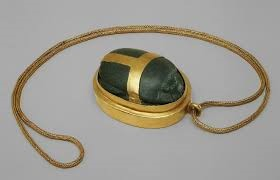

Đồ trang sức cực kì phổ biến trong suốt lịch sử của Ai Cập cổ đại. Trong các cuộc khai quật mộ, các nhà nghiên cứu đã tìm thấy rất nhiều món đồ trang sức được chôn cùng các hoàng hậu để họ có thể sử dụng ở thế giới bên kia. Đối với họ thì trang sức càng to càng tốt, Họ đeo những chiếc vòng cổ, vòng tay, mặt dây chuyền và vòng chân khổng lồ. Người bình thường sẽ đeo đồ trang sức làm bằng hạt đất sét. Những người giàu có đeo vàng và đá quý.
Một món đồ trang sức khác được ưa chuộng là BÙA HỘ MỆNH. Họ sử dụng bùa hộ mệnh với niềm tin rằng nó sẽ mang lại sự bảo hộ và may mắn. Nó thường mang hình dạng như là các vị thần thu nhỏ, mắt của Horus, Bọ hung có cánh,...Những thứ liên quan đến các vị thần linh và tín ngưỡng của họ. Bùa hộ mệnh được sử dụng từ giới thượng lưu đến các nô lệ. Khác nhau qua chất liệu làm nên nó, thường là vàng, bạc, đá quý đối với thượng lưu, còn hạ lưu sẽ thường là đất nung tráng men.Một cục đất nung nhỏ được cuộn tròn quanh một sợi dây và ép vào khuôn. Khi nung khuôn, keo cứng lại và sợi dây cháy đi, để lại một lỗ để bùa có thể xâu thành dây để có thể đeo như dây chuyền hoặc vòng tay. Bùa bằng sứ có nhiều màu sắc, nhưng người Ai Cập cổ đại ưa chuộng các màu xanh ngọc lam và xanh lam vì tin màu này là màu đem lại điều tốt lành.